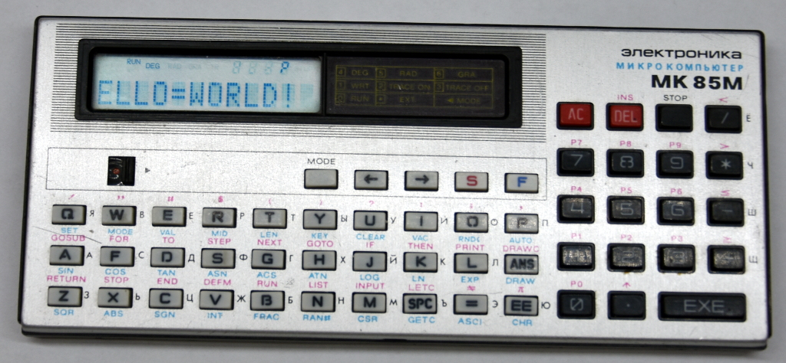

Написано после обмозговывания этой статьи http://www.pisi.com.pl/piotr433/mk85mc1e.htm
На Электронике МК-85 можно запустить свою программу в машинных кодах используя ошибку клавиши [AC]. Если во время выполнения команды INPUT нажать клавишу [AC], а затем клавишу [EXE], то интерпретатор Бейсика сделает JMP на символ Бейсик программы следующий за выполнявшейся командой INPUT.
Чуть подробнее. Во время редактирования Бейсик программы нажатие на клавишу [EXE] приводит к запуску подпрограммы в машинных кодах по адресу сохраненному в слове памяти 8258h. Обычно в этом слове находится правильный адрес и нажатие на [EXE] ни к чему плохому не приводит. Но если прервать выполнение команды INPUT нажав кнопку [AC], то в ячейку 8258h адрес нужной функции не записывается. Во время выполнения программы эта ячейка используется для хранения временных переменных. Функция INPUT там сохраняет адрес следующей команды Бейсик программы.
Традиционно, первая программа, которую пишет каждый программист, начиная изучать новое железо или новый язык программирования – это программа, выводящая на экран текст “Hello World”.
Вот пример такой программы. Программа написана начиная с адреса 826Bh, потому что это это адрес программы P0 в памяти компьютера. Эту программу надо вводить как программу P0, как обычную программу на Бейсике. Первая проблема написания программы в машинных кодах в том, что не все нужные символы можно ввести с клавиатуры. Вторая проблема в том, что получившаяся каша должна быть похожа на Бейсик программу, что бы компьютер сохранил её в своей памяти.
Адрес Данные Для ввода Ассемблер 826B 01 00 DF 31 31 31 31 1 INPUT 1111 8272 21 81 !а bmi 82B6 8274 не имеет значения 8296 1F 09 B0 82 2335Пб jsr r4, @#82B0 829A 48 45 4C 4C 4F 3D 57 4F 52 4C 44 21 3D 00 HELLO=WORLD!=0 82A8 5F 09 AE 82 2399Нб jsr r5, @#82AE 82AC 0C 7E ∑≥ sob r0, 8296 82AE 85 00 е0 rts r5 82B0 DF 09 48 12 2527Н♣ jsr pc, @#1248 ; Вывод символа 82B4 84 00 д0 rts r4 82B6 DF 15 41 80 64 82 5599Aюdб mov #8041, @#8264 82BC 14 7E ♦≥ sob r0, 8296
Вот что потребуется набрать на клавиатуре:
Символы вводимые в английской раскладке клавиатуры обозначены черным цветом, в русской раскладке обозначены красным цветом, графические символы обозначены зеленым цветом, команды Бейска обозначены синим цветом. Будьте предельно внимательны при вводе, некоторые русские и английские буквы неразличимы на экране компьютера, но имеют разные коды.
Для запуска программы введите RUN. Когда команда INPUT предложит ввести значение с клавиатуры, нажмите [AC]. После того как дисплей очистится и снова появится курсор, нажмите [EXE]. Запустится введенная программа. На экране будет выводиться прокручивающийся текст "HELLO=WORLD!=". Остановить программу можно нажав клавишу [STOP], а затем [AC].
Шестнадцатеричный дамп оперативной памяти компютера после ввода этой программы:
0260 01 00 df 31 31 ..............11 0270 31 31 21 81 00 02 00 21 30 31 32 33 34 35 36 37 11!....!01234567 0280 38 39 30 31 32 00 03 00 21 30 31 32 33 34 35 36 89012...!0123456 0290 37 38 39 30 31 00 1f 09 b0 82 48 45 4c 4c 4f 3d 78901.....HELLO= 02a0 57 4f 52 4c 44 21 3d 00 5f 09 ae 82 0c 7e 85 00 WORLD!=._....~.. 02b0 df 09 48 12 84 00 df 15 41 80 64 82 14 7e 00 ..H.....A.d..~..
Запущено на реальном компьютере:
